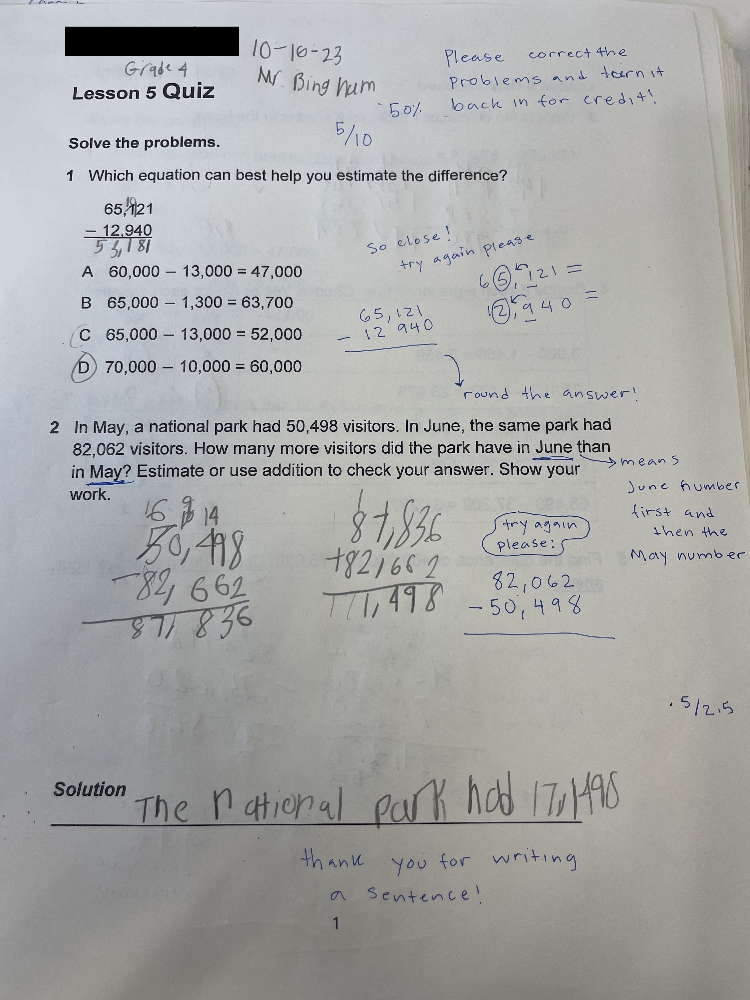
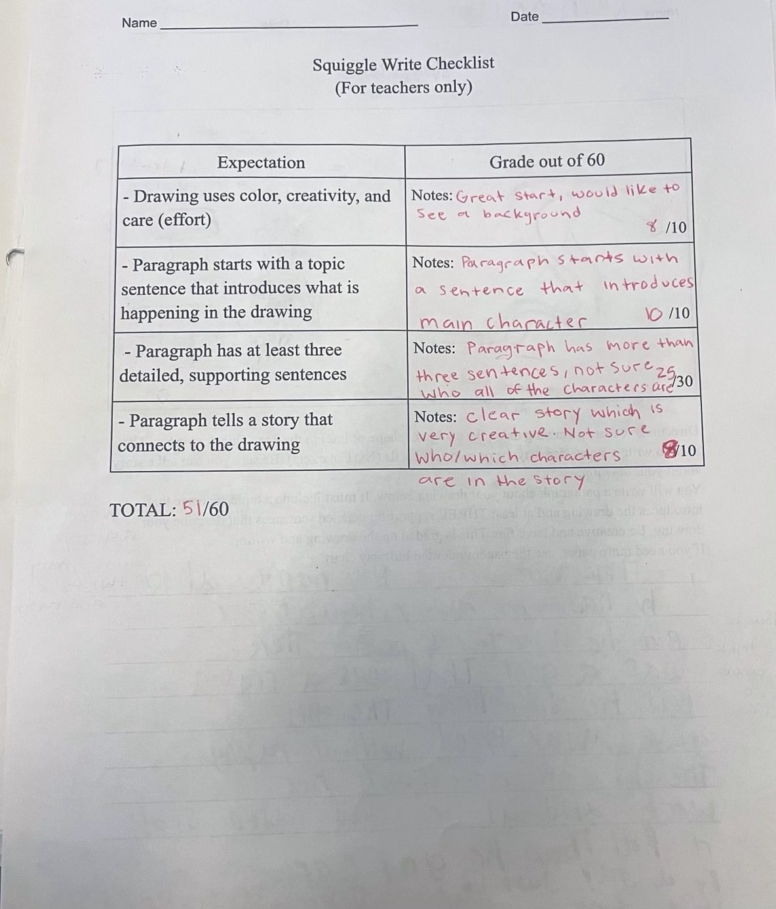
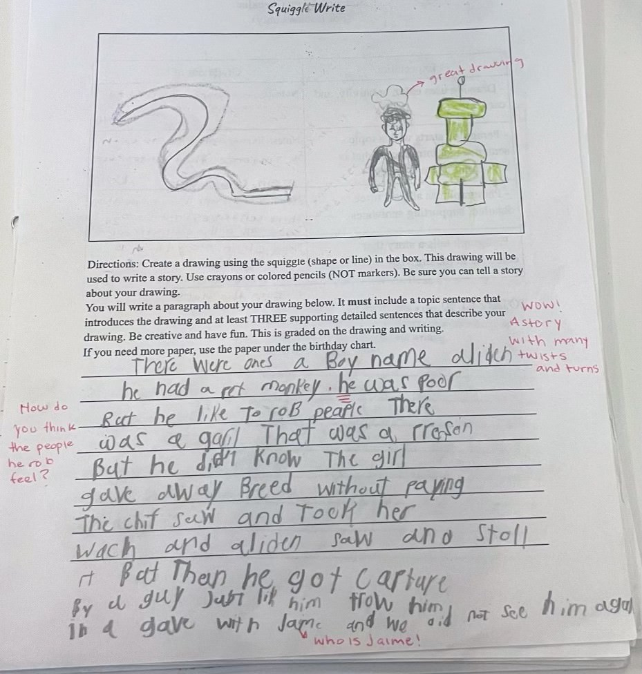
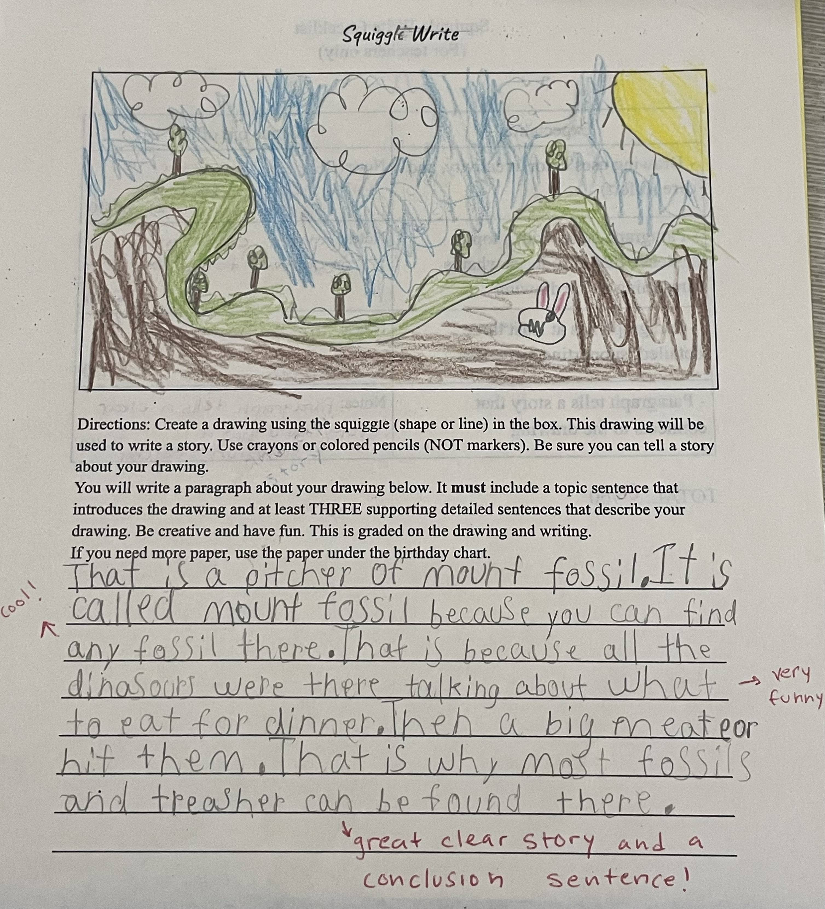

This was one of my students' earlier math tests. From their work, I discussed pie corrections with them, and they were able to fix their mistakes and get a better score. This is for the math test on the left in classwork.

This is 1/2 of the initial squiggle write and rubric for one of my students.

This is 2/2 of the initial squiggle write and rubric for one of my students. Together we discussed what he was proud of in his squiggle write and what he could improve upon in his next write. The middle two images are Classwork.

This image is the same student’s work. This is his second attempt at a squiggle write. With the feedback to given to him on the first write he was able to improve the quality of his work and his score. Classwork all the way to the right.